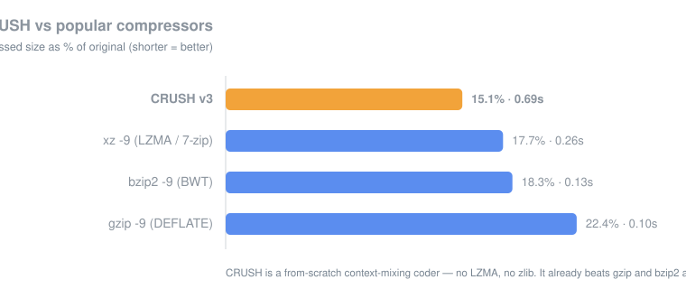

Benchmark

| tool | compressed | ratio | time |
|---|---|---|---|
| CRUSH v3 | 130,415 | 15.1% | 0.69s |
| xz -9 (LZMA / 7-zip) | 152,936 | 17.7% | 0.26s |
| bzip2 -9 (BWT) | 158,166 | 18.3% | 0.13s |
| gzip -9 (DEFLATE) | 193,136 | 22.4% | 0.10s |
863 KB of C++ source + English prose. Lower is better. CRUSH trades speed for ratio; on executables LZMA still edges ahead by under 1%.
How it works
1
Range coder
Arithmetic coding over a shrinking 32-bit interval. A bit the model is 99% sure of costs ~0.014 bits, not a whole one — close to the true entropy.
2
Context mixing
Several models (contexts of the last 0–6 bytes) predict each bit; an adaptive mixer blends them in the logistic domain, learning who to trust. Two SSE stages then sharpen the final guess.
3
Match model
A hash points back to where the last 6 bytes last appeared, predicting the next bit from the repeat — the dictionary power LZ tools get, fed into the mixer.
Use it
:: create, list, test, extract crush a backup.crush notes.txt report.pdf src\ crush l backup.crush crush t backup.crush crush x backup.crush out\ :: build from source (standalone, no DLLs) g++ -O2 -std=c++17 -static -o crush.exe crush.cpp